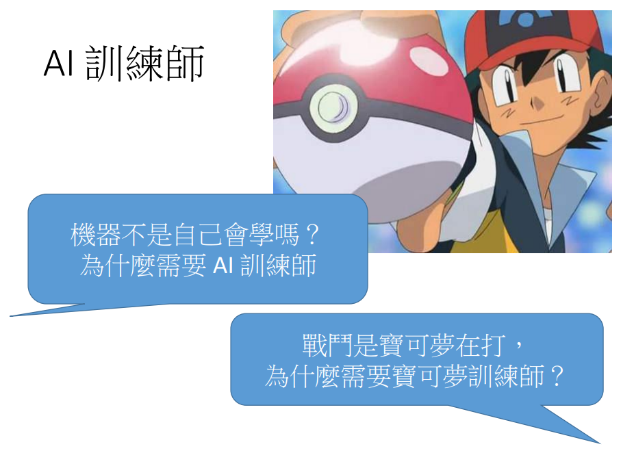
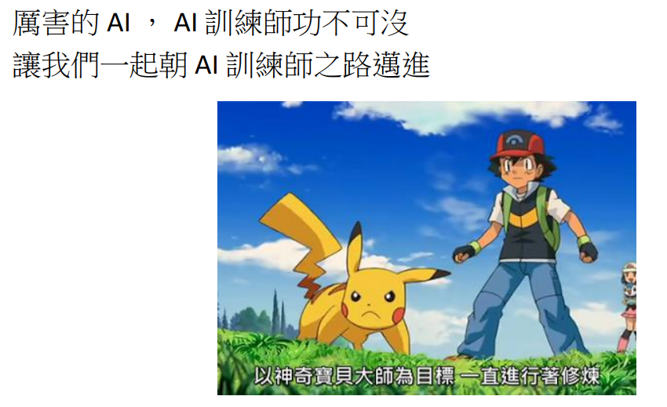

各位同学，大家好，今天我要来讲，为什么我们需要学习机器学习。听说AI要来取代人类的工作了，大家都很担心。
为什么我们需要学习机器学习？
AI即将取代部分的工作？
新工作：AI训练师
但大家不用担心会出现一个新的工作，叫做AI训练师，机器不是自己会学吗？为什么需要AI训练师。

这个问题就好像是问说，为什么需要宝可梦训练师？我记得宝可梦训练师都只在旁边嘴炮，都不自己战斗。但是我们知道，宝可梦训练师，其实很重要，例如说战斗时要选择属性适合的宝可梦。不然就会像这样（动画场景：你这个白痴，难道你不知道飞行系的遇到岩石系的神奇宝贝是没作用的吗？）。
AI训练师
AI训练师要挑选合适的model、loss function
- 不同model、loss function适合解决不同的问题
不一定能找出best function
- E.g. Deep Learning
- 需要有经验的AI训练师
同样地AI训练师需要为机器挑选合适的model和loss function。不同的model和loss function适合解决不同的问题。
宝可梦训练师
- 宝可梦训练师要挑选适合的宝可梦来战斗
- 宝可梦有不同的属性
- 召唤出来的宝可梦不一定听话
- E.g. 小智的喷火龙
- 需要有经验的宝可梦训练师
另外，我们知道，召唤出来的宝可梦，不一定会听话。例如说（动画场景：真的没有问题吗？小健，你放心，我相信喷火龙一定办得到）。也有些模型的最佳化比较困难，例如深度学习，可能会需要有经验的AI训练师来处理。

因此，我们知道要训练出厉害的AI，AI训练师功不可没，所以让我们一起朝AI训练师之路迈进。